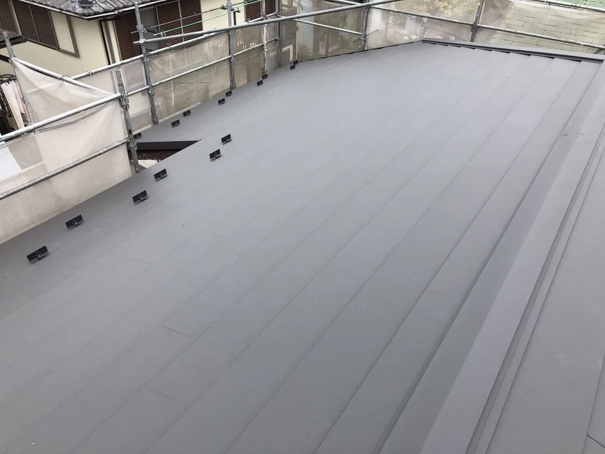

屋根修理を検討している時、色々な屋根修理用語が出てきてどの修理がいいのかわからない。
見積を貰ったけど、正しい修理なのか。というお困りを解決します。
- 目次
- 葺き替えとは
- 葺き替え以外の工法
- 葺き替えのメリット・デメリット
- 葺き替えに向いている屋根
- 瓦から金属屋根になると
- まとめ
葺き替えとは
まずタイトルにもある通り【葺き替え】とは何か。
答えは ”屋根の工法の一つ” です。
葺き替えは、既存の屋根を撤去して、新規の屋根を設置する工事です。
屋根を新品に交換する工事と認識できていれば問題ありません。
特に和風の住宅に良く使われている瓦屋根をリフォームする際に最も多い工法になります。
一例から工事の手順を説明すると、
1.足場の架設
・・・屋根工事の基本ですが動線を確保します。
2.設置物の撤去
・・・屋根の上にテレビアンテナや太陽光パネルがあれば撤去します。
3.既存屋根の撤去(瓦降ろし)
・・・屋根屋の名物の一つ瓦降ろしです。1枚1枚既存の瓦を撤去し廃棄します。
4.掃除
・・・瓦屋根の場合、瓦を撤去すると下葺きとして土や木皮・木材が出てきます。
吸水性の高い素材を利用して瓦を抜けてきた雨水を吸い込むためにありますが、
新規の屋根には必要がないので掃除をして撤去します。
5.野地板張り替え
・・・雨漏りをしている場合、屋根内部の木材が傷んでいるので新しく木板を張ります。
6.下葺き設置
・・・先ほどの土や木皮のように屋根材から抜けてきた雨水が内部に侵入しないよう下葺きを張ります。
現代では、防水シートが主流です。雨水は通さず、通気性は確保している防水シートは非常に優秀です。
7.新規屋根設置
・・・屋根本体や役物の板金を設置します。それぞれの境界から雨水は侵入するので、
いかに屋根の形に合わせて加工するかで技術が問われます。
8.掃除・設置物復旧
・・・屋根の設置が終わったら掃除をして、設置してあったものを元に戻します。
9.足場解体・完工
・・・屋根が完全に完成したら、足場を解体して完工になります。
以上が葺き替え工事の流れです。屋根・板金業者は3～7のプロです。足場や設置物の撤去には専門業者がいるので依頼することが多いです。

葺き替え以外の工法
葺き替えが屋根工事の工法の一つというのはご理解いただけたかと思いますが、
他にどんな工事があるのか知らないと比較ができませんよね。
というわけで、一般的な工法の紹介をしていきます。
カ バ ー 工 法
屋根リフォーム工事の人気No.1工法です。
以前の記事で紹介しているので詳しくはこちらから【人気No.1工法】カバー工法
カバー工法は既存屋根を”撤去せず”に新しい屋根を上から設置する工法です。
地獄の瓦降ろしがないのと既存屋根の処分費が無いので価格パフォーマンスが高いです。
葺 き 直 し
葺き替えと名前が似ていますが、”直す”ので一度撤去した既存の屋根を再び設置します。
野地板や下葺きの交換をする工事です。
住宅の見た目を変えたくない場合におすすめの工法です。
部 分 補 修
屋根材の一部が割れた際や役物板金の劣化の際には、一部分の補修・交換で済む場合があります。
小さい工事の割に費用は掛かってしまうので、足場が必要な形状の家やその他の場所も劣化が酷く近々工事が必要になりそうな場合には、全体の工事をお勧めします。
塗 装
屋根塗装は屋根材によって定期的に依頼する必要がある工事です。
定期的に塗装の必要がある屋根材を再塗装せず放置すると塗膜がなくなり屋根材の劣化が急激に進み雨漏りに繋がります。
この他にも工事の種類はありますが、現地調査や見積の依頼の時に比較すべき工事は以上になります。
葺き替えのメリット・デメリット
葺き替えの比較対象がなんとなく理解できたら、何を基準に比較するかが重要になります。
指標として葺き替えのメリットとデメリットを見ていきましょう。
葺き替えのメリット
・外観の向上
新しい屋根材に変わると住宅の印象がガラッと変わります。外壁塗装と組み合わせると新築のように生まれ変わります。
・技術進化の恩恵
築年数分、技術は進化しています。特に金属屋根は住宅屋根としては「安かろう、悪かろう。」というイメージが強いですが、
ガルバリウム鋼板の登場により、錆びにくく長持ちする上に安価という安心の屋根材に生まれ変わりました。
・耐震性の向上
ガルバリウム鋼板の強みは軽量です。屋根が軽くなることで住宅への負荷が軽減し、住宅の長持ちに繋がります。
また、重心が低くなることも耐震性の向上につながります。
葺き替えのデメリット
・工事期間が長い
他の工事に比べて工数が掛かる為、工事期間が長くなってしまいます。
工事期間は自宅の上に職人がいたり、工事音があったりと落ち着かないかもしれません。
そういった時間が比較的長いのもデメリットの一つです。
・費用が掛かる
工事期間が長いに繋がりますが、長い工事期間の分だけ人件費が掛かります。
・屋根がないタイミングが不安
一度既存の屋根を撤去する為、雨が降った場合のリスクが高いです。
・既存屋根の撤去・廃棄に関するトラブル
騒音や廃材などどんな工事でも近隣トラブルの原因になりかねませんが、
瓦降ろしは特に廃材の処理が杜撰な業者に頼んでしまうとトラブルになりやすいです。
葺き替えの向いている屋根
・瓦屋根の住宅
既存屋根が瓦屋根の場合、人気のカバー工法が出来ません。
なので屋根のリフォーム時は葺き替えがおすすめです。
・既存屋根が著しく劣化している
主な劣化の原因は、耐用年数の超過・製品の問題・メンテナンス不足・事故からなります。
どの原因にしても著しく劣化しているのであれば撤去すべきなので、葺き替えを選択しましょう。
・既存屋根材が販売中止商品
販売中止商品は大きな問題、例えばアスベスト含有の健康被害の可能性があるものもあります。
そういった屋根材を残したカバー工法はお勧めできませんので、葺き替えで一新することを考えましょう。
葺き替えは既存屋根の存在をなかったことにするので、既存屋根に不安がある場合にはお勧めです。
瓦から金属屋根で耐震性が上がる!?
瓦屋根と金属屋根の一番の違いは、重さです。
伝統的な和風の住宅はほとんどが和瓦ですが、土の下葺きに和瓦の屋根の場合1坪あたり約240kgと言われています。
対してガルバリウム鋼板の金属屋根は1坪あたり約40kgです。
30坪の住宅の場合
和瓦 30(坪) x 240(kg) = 7,200(kg)
金属 30(坪) x 40(kg) = 1,200(kg)
屋根だけで6,000kg = 6t の差があります。
地震が来た時にこの6tの差に影響がないでしょうか。
もちろん平屋か二階家のような複数階層の家かによってもその影響は変わります。
南海トラフ地震への対応も踏まえ、老朽化した住宅のリフォームを検討する際には、金属屋根を選択しましょう。
まとめ
瓦屋根も屋根材として長きに渡り活躍していますし、耐久性はトップクラスです。
一方、金属屋根は錆びやすく脆いというイメージが根付いてしまっています。
さらに、金属屋根は意匠性がなく安っぽいイメージを持っている人も少なくないと思います。
北海道や東北、北陸などの豪雪地ではその機能性と耐久性から新築市場におけるガルバリウム鋼板のシェア50％以上を占めています。
北海道に至っては90%以上のシェアです。
積雪時には屋根の重量＋雪の重量が住宅に掛かります。それを理解している地方の方がガルバリウム鋼板を選んでいます。
意匠性に関しても、海外製石粒付き金属屋根などおしゃれな屋根が増えてきました。
リフォーム市場においては金属屋根の需要の高まりを感じています。
現在和瓦の住宅にお住いの場合はぜひ、葺き替えでガルバリウム鋼板にすることをお勧めします。